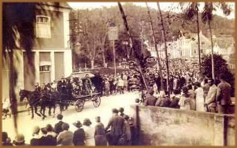
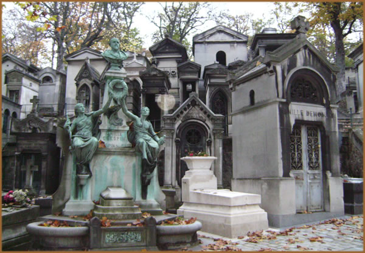

Grandioso não é
uma palavra suficientemente forte para descrever o modo
como era conduzido um funeral vitoriano. A sociedade moderna
se desligou completamente daquela pompa. Parte disso se
justifica pelo fato de que a maioria das pessoas tem aversão
por discutir a morte, cemitérios e cadáveres,
quando, de fato, funerais e lutos sejam acontecimentos comuns
e quase cotidianos. As cremações têm
se tornado cada vez mais comuns devido à falta de
espaço. Contudo, durante a Era Vitoriana (caracterizada
como o período de reinado da Rainha Vitória
sobre a Grã-Bretanha e Irlanda entre 1837 e 1901),
não se poupavam despesas para um funeral adequado.
Muitas pessoas das classes baixas planejavam
e poupavam dinheiro para o funeral dos filhos, porque a
taxa de mortalidade era elevadíssima. Queriam assegurar
que, se suas crianças não sobrevivessem, ainda
assim poderiam ter um grande funeral. Ao poupar o dinheiro
para estes funerais, normalmente as famílias eram
privadas de muitas coisas para o seu conforto.
O
cortejo fúnebre vitoriano era uma visão extraordinária.
Era conduzida por várias pessoas a pé: carregadores
de caixões, carruagens e pagens que se vestiam a
caráter e carregavam varas. Por permanecerem muito
tempo no frio, eles recebiam altas doses de gim, o que não
raras vezes terminava numa conduta desordeira. Como você
pode imaginar, isso desagradava profundamente a família
do morto, que havia contratado o serviço para uma
conduta solene.
A primeira figura no cortejo era a carruagem.
Era preta, com laterais de vidro, e recebia decoração
em ouro e prata. Grandes penas negras recobriam o carro.
Lá dentro ficava o caixão. Era brilhante e
polido, com alças em metal fino. Às vezes
era coberto com tecido preto, púrpura ou verde, preso
ao caixão com pregos de bronze ou prata. A carruagem
era preenchida com flores. Seis cavalos negros puxavam o
carro e também levavam montes de penas negras sobre
suas cabeças.
O restante dos carros seguia atrás
da carruagem. Os homens vestiam seus trajes de luto, com
fitas brocadas ao redor das cartolas. As mulheres trajavam
vestidos negros de crepe, com véus e luvas negras.
Traziam lenços negros junto ao rosto. Os leques de
luto eram feitos de penas negras de avestruz com cabos de
casco de tartaruga. Jóias de hematita, então
eram usadas.
O cortejo seguia desde a casa do falecido,
atravessando várias ruas, até o cemitério.
Às vezes um desvio era feito para as áreas
mais importantes da cidade, visando exposição
máxima. Assim que o cortejo saía da cidade,
todos os que estavam a pé embarcavam nos coches e
seguia-se a ritmo de trote. Às portas do cemitério,
os que estavam a pé desciam novamente e o cortejo
reiniciava no cemitério.
O cortejo parava na capela, no centro do
cemitério. Os enlutados permaceniam numa postura
digna e calma ao entrar. O caixão era carregado até
um suporte. No final do serviço fúnebre, o
caixão era abaixado através do solo até
catacumbas, ou a cerimônia terminava do lado de fora
do local de sepultamento. Se a cerimônia terminasse
no local de sepultamento, as mulheres se retiravam e apenas
os homens permanciam durante o enterro em si.
Um banquete era oferecido na casa do falecido;
às vezes após o funeral, mas também
antes, com o corpo ainda presente. Presunto, cidra, cerveja,
tortas e bolos era servidos. Não só os parentes
próximos, mas também os distantes estariam
presentes. Enviavam-se cartões para amigos, sócios
e conhecidos para convidá-los ao funeral.
Cartões de pêsames eram outra
tradicão, providos pelo agente funerário.
Eram impressos em preto e prata sobre branco e adornados
com os símbolos tradicionais do luto, como a tocha
invertida, o salso chorão, uma urna em um altar ou
carpideiras ajoelhadas. Estes cartões se transformavam
em um ornamento memorial. Eles eram concebidos como lembranças
do morto, pois o recipiente estaria pronto para receber
preces pela alma do falecido. O cartão continha o
nome e idade do morto, assim como a data e olocal do enterro.
Muitos cemitérios britânicos
do século XIX foram inspirados pelo famoso Pere-la-Chaise
de Paris. Até então só se viam cemitérios
pequenos, ao redor de igrejas. A população
estava crescendo e estes cemitérios se tornaram tão
pequenos que corpos parcialmente decompostos eram desenterrados
para abrir espaço para os novos. Era comum visitar
cemitérios e ver corpos sendo desenterrados. Os vitorianos
queriam cemitérios novos e grandes fora das cidades,
para prover um lugar mais digno e higiênico para os
mortos. Esses cemitérios foram concebidos para serem
lugares belos, onde os visitantes poderiam passar as tardes
em caminhadas ou à sombra de suas árvores.

Havia uma bela variedade de monumentos funerários
nos cemitérios vitorianos. Urnas tradicionais, colunas
quebradas, bustos do falecidos e anjos poderiam ser encontrados
ao lado de obeliscos em estilo egípcios e pirâmides.
Puras e clássicas lápides ao lado de fantasias
góticas. As catacumbas eram construídas abaixo
das capelas, enquanto grandes mausoléus familiares
se erguiam acima deles. Os pobres, contudo, ficavam restritos
às tumbas comuns.
Após o sepultamento, o período
de luto dependia das relações que a pessoa
tinha com o morto. O luto por um cônjuge, pai ou filho
durava 12 meses. Para avós, irmãos ou irmãs,
seis meses eram suficientes e para tios e tias, apenas dois
meses. Durante esse período a viúva deveria
vestir-se completamente em crepe preto por um ano interior,
e na maioria dos casos, os parentes vestiam-se de preto
por aproximadamente 2/3 do luto. Após isso, a seda
negra era permitida em lugar do crepe como uma lembrança
do luto. O traje preto é comumente associado com
o medo do retorno dos mortos. Quando cobertos de preto,
pensava-se que os vivos eram invisíveis aos mortos.
Os vitorianos foram a última sociedade
a verdadeiramente celebrar a morte, como fizeram os egípcios
e outras culturas antes deles. Muitos cemitérios
vitorianos tem sido destruídos para dar lugar a estacionamentos
ou casas. Os monumentos funerários já não
são tão grandes e ornamentados como antes.
Um número significativo de pessoas hoje tem pouco
ou nenhum contato com o cadáver devido ao crescimento
das cremações. Infelizmente, ao tentar diminuir
o papel da morte na nossa sociedade, damos menos valor à
vida.
Texto de
www.morbidoutlook.com
Traduzido
e extraído de www.sombriaelegancia.com